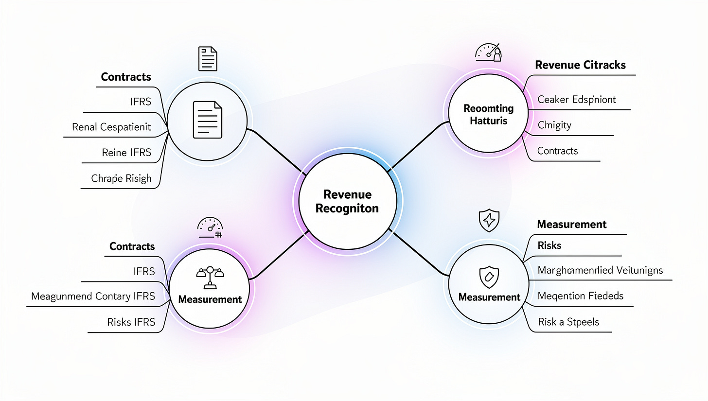
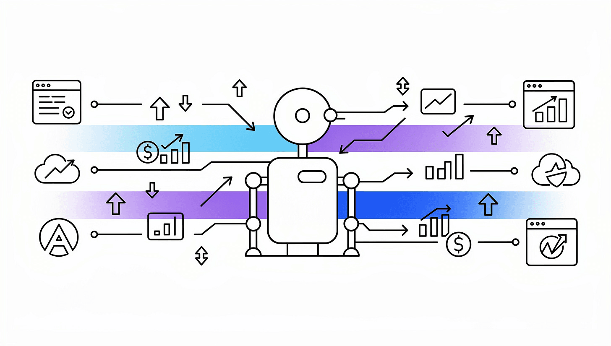

רוב האנשים מנצלים בקושי 10% מהפוטנציאל של NotebookLM. הם מעלים מסמך, שואלים שאלה, ועוצרים שם. זו טעות. הכלי הזה הוא לא מנוע חיפוש — הוא אנליסט פיננסי אישי שמחכה לתדרוך.
הנה 7 שימושים שהופכים אותו למנוע צמיחה אמיתי עבור כל מי שעובד עם נתונים פיננסיים.
מה זה בכלל NotebookLM?
NotebookLM הוא מודל AI אישי מגוגל שמנתח את המסמכים שאתם מעלים — לא את האינטרנט. בניגוד ל-ChatGPT, הוא לא ממציא תשובות: כל מענה מגיע עם ציטוט מדויק מהמקור שהעליתם. אפשר להעלות PDF, Word, Google Docs, אתרי אינטרנט, ואפילו קבצי אודיו.
למה זה רלוונטי לרואי חשבון ספציפית
כלי AI כללי כמו ChatGPT עובד עם הידע שלו — שיכול להיות מיושן, לא מדויק, ולא מותאם לרגולציה הישראלית. NotebookLM עובד רק עם המסמכים שאתם מביאים: חוזרי מס, תקנים חשבונאיים, דוחות לקוחות, פרוטוקולים.
- כל תשובה מגובה בציטוט — אפס הלוצינציות
- מעבד עשרות דוחות פיננסיים בו-זמנית
- שומר על סודיות: המסמכים שלכם לא מאמנים את המודל
7 השימושים המתקדמים — איך זה עובד בפועל
במקום לקרוא עשרות מסמכים ידנית, הכלי סורק את כולם ויוצר טבלה השוואתית אוטומטית.
הכלי לא רק מסכם — הוא מסנתז נרטיב. העלו דוחות מחקר ובקשו מאמר Thought Leadership לקהל ניהולי או טכני.

קריאת מסמכים משפטיים או אקדמיים ארוכים היא משימה סיזיפית. NotebookLM מנתח את הקשרים בין המושגים ויוצר ויזואליזציה אינטראקטיבית.
גוגל הגדילה את מגבלת ה-Custom Instructions מ-500 ל-10,000 תווים. המשמעות: אתם יכולים לבנות מומחה AI שחושב בדיוק כמוכם.
סיימתם פרויקט מחקר? אל תבזבזו שעות על עיצוב שקפים. העלו את מסמכי המקור ובקשו "Slide Deck".
הפכו את מדריכי העבודה היבשים לכלים אינטראקטיביים. צרו כרטיסיות (Flashcards) או חידונים מבוססי תרחישים.
בניגוד לחיפוש רגיל בגוגל, תכונת ה-Deep Research היא סוכן אוטונומי. אתם מגדירים יעד מורכב — ה-AI בונה תוכנית מחקר, סורק מאות מאמרים ומגיש סיכום מתוקף.

מה מגבלות הכלי?
להיות כנים — NotebookLM אינו קסם. חשוב לדעת מתי הוא פחות מתאים:
- עובד רק עם המסמכים שהעליתם — לא מחובר לאינטרנט בזמן אמת (למעט תכונת Deep Research)
- מגבלת גודל מקור — קבצים כבדים מאוד עלולים להיחתך
- תלוי באיכות הקלט — מסמכים סרוקים בצורה גרועה יתנו תוצאות חלקיות
- אינו מחליף שיפוט מקצועי — כל פלט דורש בדיקת CPA לפני העברה ללקוח
Mastering Financial Analysis with NotebookLM
המצגת המלאה של שיעור 1 בקורס הדיגיטלי "Mastering NotebookLM לרואי חשבון" — כולל מבנה העבודה, דוגמאות מהשטח ותבניות פרומפט מוכנות לשימוש.
להורדת המצגת (PDF)מוזמנים להצטרף לקהילת AI Finance Transformation בוואטסאפ —
עדכונים, כלים ופרומפטים מוכנים לשימוש לפני כולם:
התחילו עם דוח אחד של לקוח. העלו אותו, בקשו סיכום מנהלים + 3 שאלות אסטרטגיות שאתם צריכים לשאול. התוצאה תהיה משהו שהייתם מבלים שעתיים לכתוב — ב-30 שניות. כשזה עובד, תדעו בדיוק לאיפה להרחיב.
סיכום — שווה לנסות?
כן, בהחלט — במיוחד אם אתם עובדים עם נפח גדול של מסמכים חוזרים (דוחות שנתיים, חוזרי מס, פרוטוקולים). ה-ROI הכי מהיר הוא בשימוש 1 (טבלאות השוואה) ושימוש 7 (מחקר עצמאי).
- NotebookLM הוא לא מנוע חיפוש — הוא אנליסט שעובד רק עם המסמכים שלכם
- 7 שימושים: מנתוני גלם ועד מחקר אוטונומי — כולם עם ציטוטים מדויקים
- הכי חזק כשהמקורות נקיים ומאורגנים — השקיעו 5 דקות בהכנה, חסכו שעות בניתוח